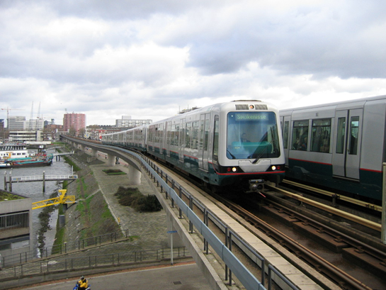
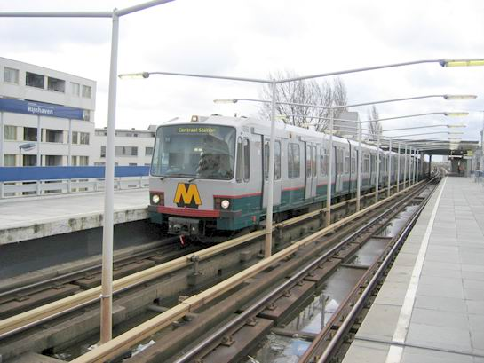
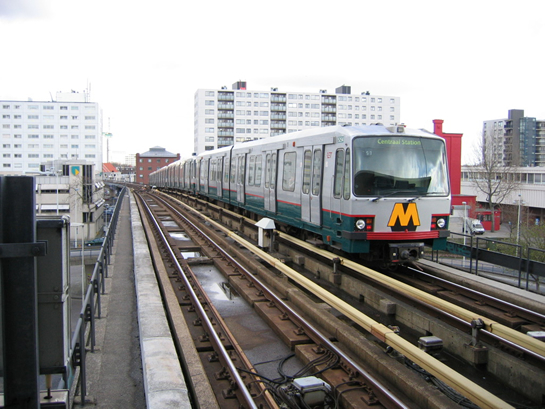
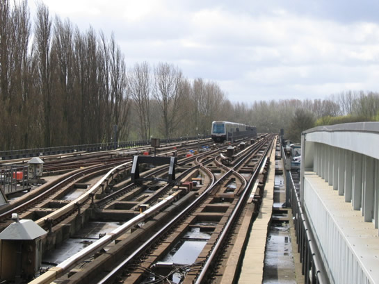
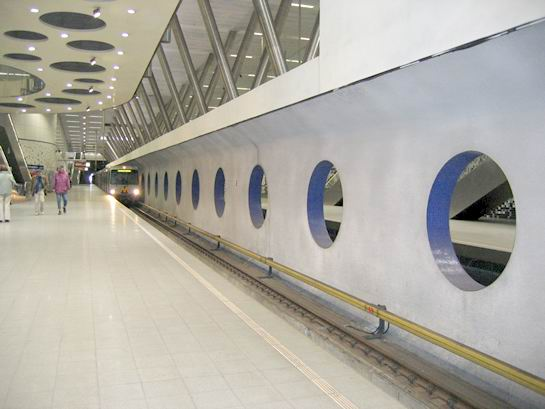
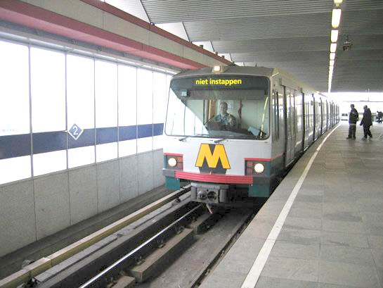
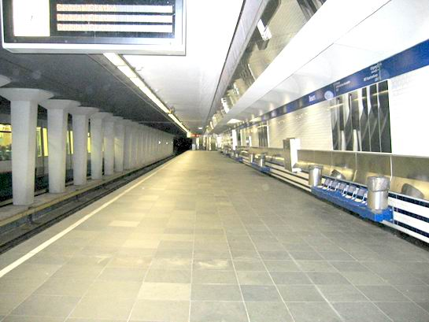

Marathon in Rotterdam deel 1, hoe reden de metro's?
- dinsdag 09 december 2008 19:10
- Geschreven door Simon
Uitgave 1 - Morgen nóg een nieuwsitem over de Marathon, hierin wordt meer aandacht besteed aan de drukte en gezelligheid op de stations.
Zondag 4 april 2004, 4-4-04 dus, was het weer zo ver: de Marathon van Rotterdam! Vele duizenden namen deel aan dit jaarlijke sportevenement, waarbij de atleten een afstand proberen af te leggen van 42.195 meter. Dwars door de stad, de start en de finish was op de Coolsingel ter hoogte van het stadhuis.
De marathon had grote gevolgen voor het openbaar vervoer. Vele tram- en buslijnen reden niet, waardoor de metro de meeste reizigers te verwerken kreeg. Er werd dan op de Erasmuslijn gereden met alleen maar vierwagentreinen, de langste, tot een uur of zes. Toen werd een aantal vierwagentreinen gesplitst, althans dat werd geprobeerd. Door verkeerde treinensamenstellingen konden vierwagentreinen niet altijd gesplitst worden in twee tweetjes, wat voor vertragingen zorgde. Ook lukte het splitsen een keer niet. Op de Calandlijn werd 's avonds gesplitst. Van de meeste driewagentreinen werden tweewagentreinen gemaakt.
Op de Calandlijn reden voornamelijk driewagentreinen. Fietsen waren tot 19.00 niet toegestaan in de metro, station Stadhuis was de hele dag gesloten, er werd ook niet gestopt. Er stond in de verbindingsboog, het enkelsporige verbindingstunneltje tussen stations Blaak (Calandlijn) en Leuvehaven (Erasmuslijn) een extra wagen klaar om in dienst te gaan, toen het erg druk begon te worden. Deze is kort na de start van de marathon ingevoegd richting Rotterdam-Zuid. De gehele dag werd er gekeerd op de keersporen áchter station Slinge. Dit bevorderde de treinenloop.
Bijzonder was dat er twee metrotreinen op de Erasmuslijn reden, die samengesteld waren uit metrostellen Type T van de Calandlijn (zie de foto's). Er reden twee vierwagentreinen, de een bestond uit de 5221, 5237, 5262 en 5254, de ander bestond uit de 5258, 5224, 5252 en de 5248. Deze Teetjes deden een extra dienst op het traject Centraal Station - Slinge.
Het team van retmetro.nl was nagenoeg de hele dag langs de lijn en maakte de volgende foto's van de metro, die een speciale Marathondienstregeling(scheurdienst) reed:

Uiteraard aanwezig in grote getalen: Type B/MG2-1.

Maar ook Type T was aanwezig op een ongewone lijn voor dit treinstel. De 5221 op Rijnhaven...

En hier de 5254 net buiten station Zuidplein. De Type T's op de Erasmuslijn reden extra diensten tussen Centraal Station en Slinge...

Gedurende de hele dag werd er gekeerd achter station Slinge, hier Type B en Type T achter elkaar op de keersporen van station Slinge...

Een ongewone foto: Type T op Wilhelminaplein. Dat komt ook maar één keer per jaar voor!

Rond 19.00 uur 's avonds werd door personeel van Service&Onderhoud 's-Gravenweg deze Type T-combinatie terug gebracht naar remise 's-Gravenweg vanaf de Waalhaven spoor 121.

Er werd ontkoppeld tot tweewagentreinen op station Slinge spoor 3, dit ging maar een enkele keer goed, menige dienst bleef een vierwagentrein...

's Middags razenddruk, tegen 19.15 toch wel erg rustig...